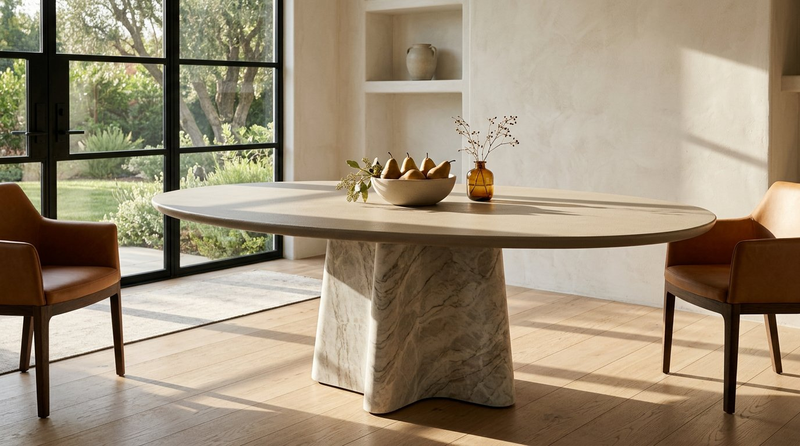

ТОК — Товары Отличного Качества
«Изменить к лучшему представление о российской дизайнерской мебели» — миссия, которая ведёт нас с первого дня.
Наша компания основана в 2019 году в Санкт-Петербурге. Тогда встретились четыре человека с определенными способностями: придумывать, проектировать, производить, управлять. Это соединилось в единый пазл под названием ТОК.
Собственное производство полного цикла позволяет нам расширять возможности дизайна и контролировать качество на всех этапах. Каждая деталь проходит через заботливые руки профессионалов.
Мы делаем ТОК — Товары Отличного Качества, потому что нами движет миссия изменить к лучшему представление о российской дизайнерской мебели.

Авторские серии Сергея Белякова: выразительный силуэт, честная геометрия и внимание к деталям, которые чувствуются рукой.
Каркас, наполнение, обивка и финиш — на собственной фабрике. Мы контролируем каждый этап, а не только финальный результат.
Массив дуба и бука, ППУ высокой эластичности, букле и лён, инженерный мрамор собственной разработки.
От идеи до вашего интерьера
Прозрачный путь: вы видите, что происходит с заказом на каждом этапе.
Знакомство
Встреча в шоу-руме или онлайн. Подбираем серию, обивку и конфигурацию под помещение.
Проект
3D-визуализация, технический чертёж, образцы материалов и финальная смета.
Производство
Изготовление на фабрике, промежуточные фотоотчёты и контроль качества.
Доставка
Бережная доставка, сборка мастерами и расстановка — мебель сразу готова к жизни.

Инженерный мрамор ТОК
Для серии Сатурн мы разработали собственный материал — инженерный мрамор с естественным и предсказуемым рисунком камня.
Он устойчивее натурального к пятнам и нагрузкам, и при этом сохраняет глубину рисунка, за которую ценят камень в интерьере.
Смотреть Сатурн
Почувствуйте мебель вживую
Три шоу-рума, 1 267 м² экспозиции и образцы всех материалов. Менеджер проведёт по коллекциям и ответит на вопросы.
Выбрать шоу-рум